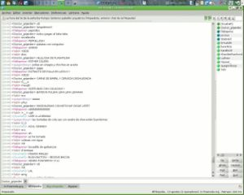

Chat de la Frikipedia
 De: La Frikipedia, la enciclopedia extremadamente seria.
De: La Frikipedia, la enciclopedia extremadamente seria.
También llamado "entonces... ¿de ahí es de donde vienen las chatis?". Lugar donde frikidélicos, sabios, expertos ó ambos, debaten sobre temas de actualidad.
En hora punta, el chat puede haber la friolera de 4 o 5 usuarios en linea (uuooooh!!). La mayoría de la gente que se conecta al chat no es para hablar sino para entrar y salir por lo que los tipos de usuarios que hay son:
Temporales y/o de momento de aparición indefinido
Este es el resultado de hacer un bot en frikipedia,siempre coherentes y perfectos.
Lo que yo decía,siempre coherentes y perfectos.
- Los frasicortos: entran, dicen la frase en una misma linea hola-y-adios para desconectar inmediatamente sin dar tiempo a poder responder. Denotan cierto desprecio a la chat o son de mente corta.
- Los Incredulos-lelillos: Otros en pleno debate frikipédico entrar y dicen "hola" aun viendo que hay gente conversando dicen una pregunta estúpida de respuesta trivial como "¿hay alguien?" a lo que un frikidélico, tratando de ver como reacciona el sujeto a las contradicciones, responde "no", ante la falta de repuesta aclara "si te parece somos bots", después de ásto el sujeto dice "adios" y se desconectan sin hacer caso al frikidélico. Hay varias teorías sobre estos usuarios como que no creen que haya gente que hable en el chat o que simplemente son tan lelillos que se creen lo de los robots parlantes que simulan una conversación en el chat son un experimento relacionado con el plan de dominación mundial, también pueden ser ambas a la vez.
- El pedo-en-el-viento: Son usuarios que ni se molestan en saludar simplemente se conectan y desconectan, apareciendo y desapareciendo como un pedo en el viento. La teorías apuntan a que estos usuarios son muy tímidos y por ello no se atreven hablar o simplemente como los niños de mentalidad corta sólo hacen eso para tocar
los cojones las narices por que se aburren y como su nombre indica son tan molestos como un pedo apestoso.
- El susceptible: Es un usuario nuevo del chat que quiere hablar y como persona educada suele saludar y decir "hola" pero los frikidelicos le confunden con otro tipo de usuario y le dicen "¿que?¿te vas ya? ¿no? venga adiós" el usuario cree que le dan indirectas para que se marche y de que no es aceptado. Como su nombre indica se vuelve "susceptible" y a partir de ahora pueden ocurrir 2 cosas:
- El usuario se
cabrea enfada y se desconecta pasa a ser otro usuario tipo frasicorto, incredulos-lelillos, pedo-en-el-viento y habitualmente un frasicorto.
- El usuario pide explicaciones "¿me estáis echando?" si se pilla a tiempo se le explica la situación del chat y probablemente pasa a ser un frikidelico.
- El perdido al entrar por primera vez en el canal, se encuentra a los parlanchines en toda su gloria. Ellos le saludan y lo tratan como uno más, pero el perdido es incapaz de seguir nada de lo que están diciendo, y termina pirándose porque no sabe como ha llegado a este mundo paralelo, y tiene miedo.
- El patoso o lammer: Entra a preguntar una duda, algún problema y cuando se soluciona se marcha. Los problemas no se suelen solucionar ya que no
tiene ni puta idea se le da bien la informática ni el formato. Acaba con la paciencia de los administradores, llegando a estar incluidos en una secretísima lista negra por pedir infoboxes por la cara, por ejemplo.
nota: en el 99% de los usuario nuevos se cabrea ,de allí que haya pocos frikidelicos, debido a la escasez de frikidelicos se conocen bien entre si, por lo que casi nunca se confunde con un nuevo usuario.
Frikidelicos o estables
 Los frikidelicos discutiendo sobre gustos gastronómicos.
Tipos de frikidélicos: son usuarios que hablan mas de una frase o permanecen el chat más de 5 segundos, los hay de varios tipos:
- Filósofos: No suelen hablar ya que
están siempre descargando pr0n son frikidélicos... tan sabios y tan metidos y tan absortos en sus dilemas, que rara vez hacen vida mundana. Casi siempre están conectados eso si, 24/7, como debe ser.
- El loco solitario: El típico usuario parlanchín que como solo encuentra filósofos en el chat y rara vez le contestan empieza hablar el solo, creyendo que los filósofos le escuchan.
- El saluda: Es un usuario que esta conectado pero debido a la "actividad" del chat mira cada x tiempo si alguien habla y siempre que lo hace. Saluda a la gente por si alguien quiere hablar pero lo malo es que no suele coincidir con un "loco solitario" o con otro saluda así que rara vez habla pero cuando hay una coincidencia el chat entra en "auge".
- Los Parlanchines: Suelen hablar entre ellos toda la tarde, ignorando a los demás, y contándose sus penas el uno al otro. De vez en cuando, de las locuras que dicen acaba saliendo algún artículo.
- Los absurdistas: Aquellos que dan vida a la extensión de las excelencias de la filosofía del absurdismo. Hasta que se perfeccione el área de duelos, serán siempre echados e incomprendidos, pero algún día dominarán el mundo para que los castores naden en helado de vainilla desoxirribonucléico (eso dicen, yo no sé qué les pasa).
- [KrusheR] : Viene a ser una mezcla de filósofo y parlanchin, aunque solo habla en su idioma, el gñapés. Hasta la fecha nadie ha conseguido entenderle.
Ver también
Entra para descubrirlo
Autor(es):
- Krusher
- Nexo
- Jocicuo
- Jowsh
- Doctor grijander
- SHION
- Frikiman
- Aque
- Alex2610
- Caraacnénerdi
Frikipedia 2005-2016, Licencia
GFDL 1.2 - Extraído por FrikiLeaks